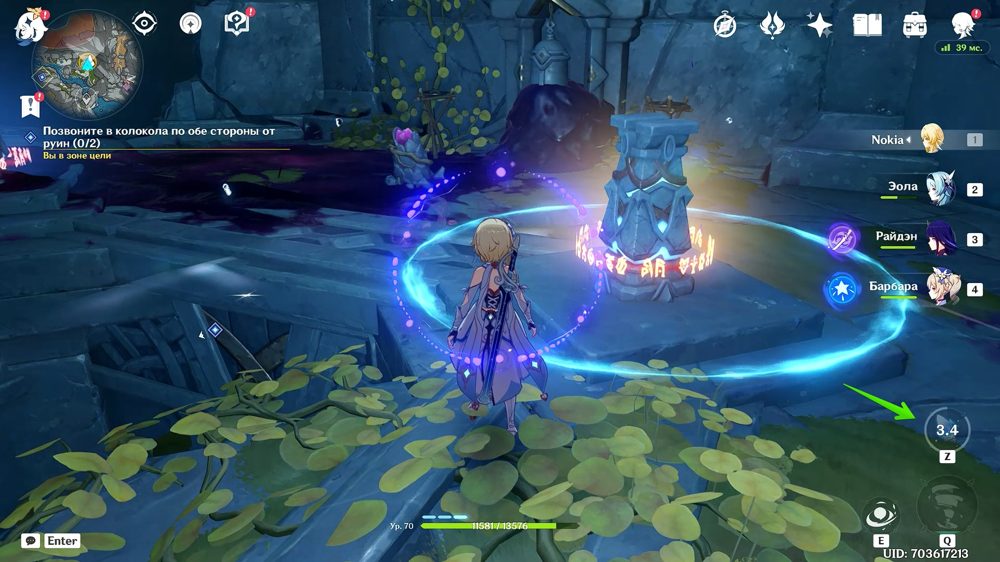

Прохождение квеста «Угроза во тьме» в Genshin Impact. Как позвонить в колокола и избавиться от тумана
Вместе с обновлением 2.6 в Genshin Impact был добавлен новый регион — «Разлом». Так как локация оказалась довольно большая, чтобы разнообразить её исследование, вы можете выполнять различные задания мира. В этом гайде мы расскажем, как пройти квест «Угроза во тьме» из цепочки заданий «Записи о путешествии вглубь Разлома».
Как начать квест «Угроза во тьме» в Genshin Impact
«Угроза во тьме» является одним из основных заданий линейки квестов «Записи о путешествии вглубь Разлома». Последний также напрямую связан с заданием Архонтов «Реквием гулких глубин: Том 2, Глава 4».
Чтобы начать выполнение этого задания, сперва вам нужно пройти следующие квесты:
- Неожиданная встреча в глубинах.
- Тайна скалистых затворов Цисин.
- Начало исследования глубин.
- Парящий фрагмент небесного камня.
Когда сделаете это, в журнале задач появится соответствующее задание. Нажмите «Отслеживать», чтобы на карте появилось два маркера.
Как добраться до первого колокола и позвонить в него
По квесту вам нужно найти два колокола и позвонить в них, чтобы развеять чёрный туман. Один из них находится на северо-западе локации, другой — на юго-востоке. Карта региона «Разлом» в Genshin Impact выполнена неудобно, так как в большинстве случаев непонятно, нужно спускаться глубже или, наоборот, подниматься наверх. Поэтому вы можете столкнуться с трудностями во время поиска правильного пути.

Телепортируйтесь в Каменные чертоги и следуйте на север по дороге через Безымянные руины. У входа в пещеру вас будет ждать руинный молотильщик, а сразу после него вы встретитесь с новым врагом — рыцарем чёрного змея. Последний появится, когда вы подойдёте к стене.

Доберитесь до отмеченной области и найдите фею. Следуйте за ней, осмотрите ящик и найдите стелу, которая реагирует на свет. Подойдите к ней с заряженным адъювантом, чтобы перед вами появился поток воздуха. Поднимитесь наверх и убейте мага бездны.
При помощи адъюванта активируйте устройство, рядом с которым стоял маг бездны. Теперь вы можете бить по нему, выпуская сгустки света и избавляясь от тёмной жидкости. Достаточно очистить один из четырёх механизмов поблизости, после чего вы сможете восстанавливать энергию света и использовать адъювант на других камнях.
Когда все камни будут очищены от тёмной жидкости, появятся два обитателя Разлома. Разберитесь с ними и позвоните в колокол.
Как добраться до второго колокола и позвонить в него
Вернитесь к Каменным чертогам и следуйте по дороге на юг. Здесь вы увидите спуск вниз. Продолжайте спускаться, пока не доберётесь до точки быстрого перемещения.
Сразу после этого летите к разрушенному мосту и поднимитесь к зданию. Здесь нужно убить руинного молотильщика, чтобы пройти внутрь. Когда сделаете это, войдите в здание и найдите двух фей. Если решите головоломку, то сможете открыть драгоценный сундук и активировать поток ветра.
Для этого поместите фей рядом со стелами, которые реагируют на свет. Эти стелы находятся в противоположных частях здания. Зажгите устройство для света, затем подойдите к последней стеле при наличии зарядов света.
Прыгайте в поток ветра и заберитесь в верхнюю часть здания. Поместите фею рядом с противоположной стелой и активируйте устройство, чтобы открыть решётку. Спуститесь вниз, победите руинного молотильщика и позвоните в колокол. Не забудьте расправиться с хиличурлами и собрать ценные предметы из богатого сундука.
Как избавиться от тумана и завершить квест «Угроза во тьме»
Когда два колокола будут активны, вернитесь к чёрному туману в Безымянные руины. Вы увидите кат-сцену, в которой туман рассеивается, но появляются два врага — Агнарр и Эгилл. Это знакомые вам монстры, которых вы уже могли встречать при выполнении других квестов.

Нанести много урона этим врагам можно, когда они стоят рядом друг с другом. Для этого используйте анемо-способности Путешественника. Когда у монстров останется немного здоровья, они активируют щиты. Старайтесь, чтобы противники стояли неподалёку друг от друга. Так вы рассправитесь с ними намного быстрее.
После боя вы получите достижение «Муки чёрного тумана…» и награды.
Награды за прохождения квеста «Угроза во тьме»
- Опыт приключений (450);
- Камень Истока (50);
- Мора (50 000);
- Волшебная руда усиления (6);
- Особый магический куб.
Данная статья была взята с сайта vgtimes.ru